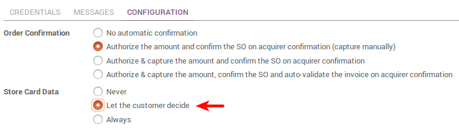

Odoo embeds several payment methods to get paid on eCommerce, Sales and Invoicing apps.
What are the payment methods available
Wire transfer
Wire Transfer is the default payment method available. The aim is providing your customers with your bank details so they can pay on their own via their bank. This is very easy to start with but slow and inefficient process-wise. Opt for online acquirers as soon as you can!
Payment acquirers
Redirect your customers to payment platforms to collect money effortless and track the payment status (call-back). Odoo supports more and more platforms over time:
- Paypal
- Ingenico
- Authorize.net
- Adyen
- Buckaroo
- PayUmoney
- Sips
- Stripe
How to go live
Once the payment method ready, make it visible in the payment interface and activate the Production mode.
How to let customers save and reuse credit cards
To ease the payment of returning customers, you can let them save and reuse a credit card if they want to. If so, a payment token will be saved in Odoo. This option is available with Ingenico and Authorize.net.
You can turn this on from the acquirer configuration form.
How to debit credit cards to pay subscriptions
Odoo Subscription allows to bill services automatically on a recurring basis. Along with it, you can have an automatic debit of the customer's credit card.
This option is available with Ingenico and Authorize.net.
You can turn this on from the acquirer configuration form.

That way a payment token will be recorded when the customer goes for the subscription and an automatic debit will occur whenever an invoice is issued from the subscription.
How to use other acquirers (advanced)
Odoo can submit single payment requests and redirect to any payment acquirer. But there is no call-back, i.e. Odoo doesn't track the transaction status. So you will confirm orders manually once you get paid.
How to:
- Switch to developer mode.
- Take the Custom payment method.
- Set up the payment form (S2S Form Template) as instructed by your payment acquirer. You can start from default_acquirer_button that you can duplicate.
Other configurations
Odoo can also be used for more advanced payment processes like installment plans (e.g. Paypal Installment Plans).
Such a customization service is made on-demand by our technical experts based on your own requirements. A business advisor can reach you out for such matter. Contact us.